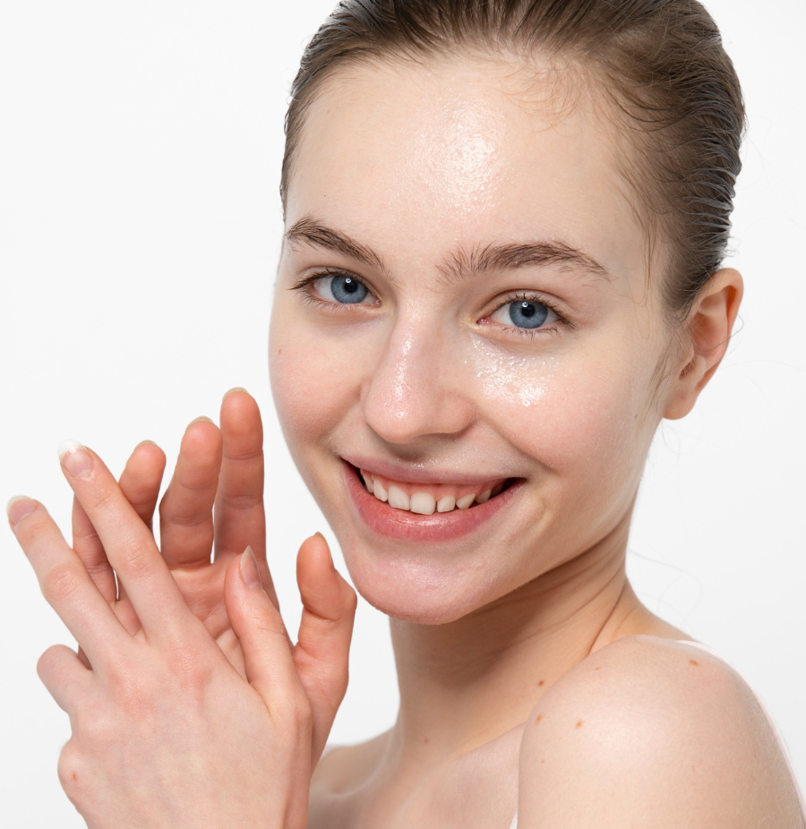

1
2
3
4

Kulit Berminyak
Kulit wajah terlihat lengket, mengkilap, basah, dan berkilau
Wajah mudah berjerawat
Banyak tumbuh komedo
Pori-pori terlihat besar dan jelas pada kulit wajah
Tidak cocok dengan produk skin care
Penyebab Kulit Berminyak
Tidak menggunakan pelembap
Berlebihan merawat kulit
Kurang minum air putih
Memiliki pori-pori
yang besar
Tips Merawat Kulit Berminyak
Rekomendasi produk
Kembali ke Beranda
1. Cuci Wajah Secara Teratur
4. Gunakan Masker Wajah Sekali Seminggu
5. Aplikasikan Pelembap Wajah
3. Hindari menyentuh wajah dengan tangan
2. Memilih produk perawatan bebas minyak
6. Menggunakan kertas minyak